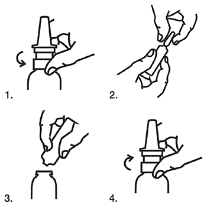
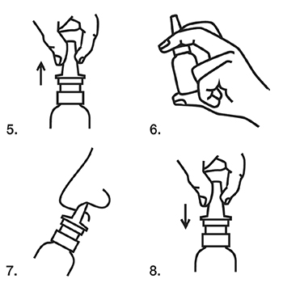

|
 |
| РИНОСТЕЙН® (RINOSTEIN) acetylcysteine, tuaminoheptane спрей назальный | ||||||||||||||||||||||||
|
Клинико-фармакологическая группа: Препарат с муколитическим и сосудосуживающим действием для местного применения в ЛОР-практике Номер и дата регистрации: ЛП-007336 от 30.08.21 Код ATX: R01AB08 |
Владелец регистрационного удостоверения: зарегистрировано и произведено Представительство: | |||||||||||||||||||||||
Форма выпуска, состав и упаковка ◊ Спрей назальный в виде практически бесцветного, прозрачного раствора с характерным мятным и слегка сернистым запахом.
Вспомогательные вещества: сорбитол 70% - 20 мг, натрия дигидрофосфата дигидрат - 3.9 мг, этанол 95% - 3.13 мг, натрия бензоат - 2 мг, натрия гидрофосфата дигидрат - 1.5 мг, дитиотреитол - 1 мг, натрия гиалуронат - 1 мг, динатрия эдетат - 0.2 мг, ароматизатор мятный - 0.188 мг, натрия гидроксид - до pH 5.5-7.0, вода д/и - до 1 мл. 10 мл - ампулы бесцветного стекла (1) - упаковки ячейковые контурные (1) в комплекте с флаконом с навинченной спрей-насадкой и этикеткой слежения× - пачки картонные. × этикетка слежения может быть наклеена на флакон. | ||||||||||||||||||||||||
| ||||||||||||||||||||||||
Описание препарата основано на официально утвержденной инструкции по применению и утверждено компанией-производителем для издания 2023 г. | ||||||||||||||||||||||||
Фармакологическое действие |
Фармакокинетика |
Показания |
Режим дозирования |
Побочное действие |
Противопоказания |
Беременность и лактация |
Особые указания |
Передозировка |
Лекарственное взаимодействие |
Условия хранения и сроки годности |
Условия реализации
Фармакологическое действие
Муколитическое и сосудосуживающее действие препарата является отражением фармакологических свойств действующих веществ, входящих в его состав. Ацетилцистеин обладает муколитической активностью за счет наличия свободной сульфгидрильной группы, которая путем разрыва дисульфидных связей гликопротеинов слизи оказывает разжижающее действие на назофарингеальный секрет. Туаминогептана сульфат – симпатомиметический амин, при местном применении оказывает сосудосуживающее действие без системных воздействий. Эти два вещества действуют синергически для снижения интраназальной резистентности. Фармакокинетика
Всасывание После введения терапевтической дозы (2 нажатия по 50 мкл) препарата Cmax туаминогептана в плазме достигается в интервале 0.25-6 ч. Распределение Среднее значение Сmax туаминогептана после 2 нажатий по 50 мкл препарата составляло 0.95 нг/мл, среднее значение Тmax составляло 2 ч. Метаболизм Метаболизм туаминогептана сульфата в гепатоцитах человека был изучен in vitro. В условиях in vitro не происходило трансформации в гепатоцитах человека. Основным метаболитом N-ацетилцистеина является неорганический сульфат, который выводится с мочой, другие метаболиты включают таурин, цистеин и N,N-диацетилцистеин. N-ацетилцистеин быстро деацетилируется до цистеина, который включается в белки. Избыток цистеина поступает в печень, где он либо метаболизируется для выведения, либо дополнительно модифицируется. Выведение Средний Т1/2 туаминогептана в плазме крови после 2 нажатий по 50 мкл препарата составляет 9.8 ч. Через 12 ч после приема туаминогептан определялся у всех испытуемых (среднее значение 0.42 нг/мл). Через 24 ч после приема средняя концентрация туаминогептана в плазме крови составляла 0.30 нг/мл, но у большинства испытуемых концентрация была уже ниже предела количественного определения (0.100 нг/мл). Показания
Режим дозирования
Препарат вводят в носовую полость в виде спрея с помощью спрей-насадки. Взрослым: по 2 впрыскивания спрея (2 нажатия на спрей-насадку) в каждый носовой ход 3-4 раза/сут. Детям старше 6 лет: по 1 впрыскиванию спрея (1 нажатие на спрей-насадку) в каждый носовой ход 3-4 раза/сут. Длительность лечения не должна превышать 7 дней. Не следует превышать рекомендованные дозы и курс лечения без консультации с врачом. Инструкция по применению спрея назального   1. Открыть флакон, отвинтив спрей-насадку. 2. Вскрыть ампулу путем надавливания на расположенное на головке ампулы кольцо разлома или точку и насечку. 3. Перелить препарат из ампулы во флакон. 4. Навинтить спрей-насадку на флакон. 5. Снять колпачок со спрей-насадки. 6. Активировать спрей-насадку с помощью нескольких нажатий, держа флакон вертикально вверх. 7. Ввести необходимое количество препарата в носовую полость нажатием на спрей-насадку. 8. Надеть колпачок на спрей-насадку. 9. Указать дату вскрытия ампулы с препаратом на этикетке слежения и наклеить этикетку слежения на флакон (если она не наклеена, а помещена в пачку). Применение препарата возможно в течение 20 дней с момента вскрытия. По истечении этого срока препарат следует выбросить. Побочное действие
Частое применение препарата в высокой дозировке может послужить причиной побочных эффектов симпатомиметической природы (таких как повышенная возбудимость, учащенное сердцебиение, тремор и прочие). Иногда возможна сухость в носу и горле, а также угревидная сыпь. Эти реакции, однако, полностью исчезают при прекращении применения препарата. Нежелательные реакции, приведенные ниже, могут быть связаны с применением препарата; частота возникновения указанных нежелательных реакций неизвестна (невозможно оценить на основании имеющихся данных).
Противопоказания
С осторожностью: окклюзионные сосудистые заболевания; сахарный диабет; гипертиреоз; астма; гипертрофия предстательной железы, поскольку она может затруднять мочеиспускание; применение бета-адреноблокаторов; длительное применение может вызвать возобновление симптомов заложенности и лекарственно-индуцированный ринит. Применение при беременности и кормлении грудью
Данные об ограниченном количестве пациенток, принимавших данное лекарственное средство при беременности, не указывает на неблагоприятное воздействие ацетилцистеина на течение беременности или на здоровье плода/новорожденного ребенка. На сегодняшний день другие соответствующие эпидемиологические данные отсутствуют. Исследования ацетилцистеина на животных не указывают на прямое или косвенное вредное воздействие в части репродуктивной токсичности. Данные о применении во время беременности или об исследованиях на животных туаминогептана или комбинации ацетилцистеина с туаминогептаном отсутствуют. Применение данного лекарственного средства во время беременности не рекомендуется. Хотя информация о выделении ацетилцистеина или туаминогептана в грудное молоко отсутствует, риск для детей, находящихся на грудном вскармливании, не может быть исключен. Применение данного лекарственного средства во время кормления грудью не рекомендуется. Особые указания
У пациентов с сердечно-сосудистыми заболеваниями, особенно больных с артериальной гипертензией, лечение должно проводиться под контролем врача. Препарат следует применять с осторожностью у больных астмой. Длительный прием препаратов, сужающих кровеносные сосуды, может нарушать нормальную функцию слизистой оболочки носовой полости и придаточных пазух носа, а также вызывать привыкание к препарату. Таким образом, частое применение в течение длительного времени может иметь неблагоприятное воздействие. Препарат следует применять с осторожностью у пожилых пациентов с гипертрофией простаты из-за риска задержки мочи. Применение, особенно длительное, средств местного применения может вызывать сенсибилизацию: в этом случае необходимо прекратить использование препарата и, если требуется, прибегнуть к соответствующему лечению. При отсутствии полного терапевтического ответа в течение нескольких дней следует проконсультироваться с врачом; в любом случае, продолжительность лечения не должна составлять больше 1 недели. По решению врача применение препарата можно сочетать с соответствующей антибактериальной терапией. Туаминогептана сульфат может давать положительный результат допинг-теста. Данный препарат не предназначен для офтальмологического применения. Использование в педиатрии Препарат следует применять с осторожностью у детей, принимая во внимание, что препарат противопоказан к применению у детей младше 6 лет. Влияние на способность к управлению транспортными средствами и механизмами Не оказывает влияния на способность управлять транспортными средствами и механизмами. Специальных исследований не проводилось, но пациентов следует информировать о том, что в некоторых случаях отмечались галлюцинации. Передозировка
Симптомы: при передозировке у взрослых пациентов могут наблюдаться следующие симптомы: артериальная гипертензия, светобоязнь, сильная головная боль, стеснение в грудной клетке. При передозировке у детей возможна гипотермия с выраженным седативным эффектом. Лечение: симптоматическое. Лекарственное взаимодействие
Несмотря на низкую системную абсорбцию туаминогептана, при его местном нанесении в носовую полость следует принимать во внимание следующее потенциальное взаимодействие:
|
||||||||||||||||||||||||
Вернуться наверх |
||||||||||||||||||||||||
Copyright © Справочник Видаль «Лекарственные препараты в России», Москва, Россия